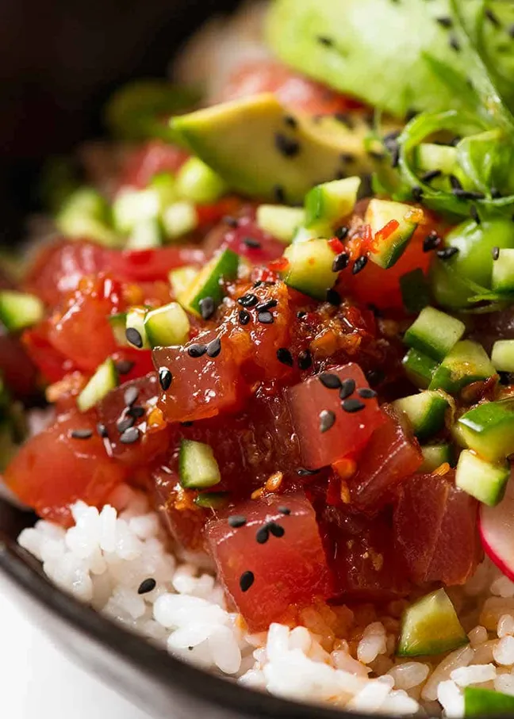

Index.
Tuna Poke Bowl

So many Poke Bowl recipes disappoint with bland dressings and tasteless rice….
Skip the store bought! Homemade really IS tastier, you get to top it with what you want and it’s a heck of a lot cheaper too!!!
Ingredients
- Sushi Rice
- Tuna
- Dressing
- Avocado & Egg
- Cucumbers & Carrots
- Cream Cheese
Steps:
- Cook sushi rice
- Chop Tuna into cubes and marinade with the dresssing of choice.
- Slice / dice / shred veggies into eating-friendly size.
- Assemble the poke bowl with rice as the cushion.